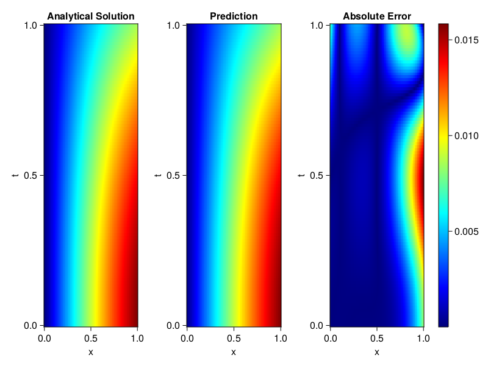
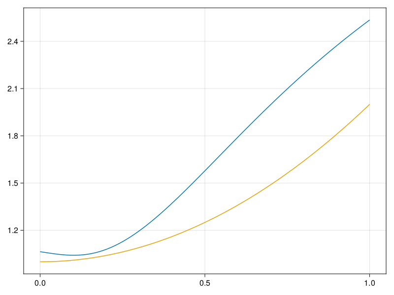

Inverse problem for the wave equation with unknown velocity field
We are going to sovle the wave equation.
using Sophon, ModelingToolkit, IntervalSets
using Optimization, OptimizationOptimJL
@parameters x, t
@variables u(..), c(..)
Dₜ = Differential(t)
Dₜ² = Differential(t)^2
Dₓ² = Differential(x)^2
s(x,t) = abs2(x) * sin(x) * cos(t)
eq = Dₜ²(u(x,t)) ~ c(x) * Dₓ²(u(x,t)) + s(x,t)
bcs = [u(x, 0) ~ sin(x),
Dₜ(u(x, 0)) ~ 0,
u(0, t) ~ 0,
u(1, t) ~ sin(1) * cos(t)]
domains = [t ∈ Interval(0.0, 1.0),
x ∈ Interval(0.0, 1.0)]
@named wave = PDESystem(eq, bcs, domains, [t,x], [u(x,t),c(x)])\[ \begin{align} \frac{\mathrm{d}}{\mathrm{d}t} \frac{\mathrm{d}}{\mathrm{d}t} u\left( x, t \right) =& c\left( x \right) \frac{\mathrm{d}}{\mathrm{d}x} \frac{\mathrm{d}}{\mathrm{d}x} u\left( x, t \right) + \cos\left( t \right) \left|x\right|^{2} \sin\left( x \right) \end{align} \]
Here the velocity field $c(x)$ is unknown, we will approximate it with a neural network.
pinn = PINN(u = FullyConnected((2,16,16,16,1), sin),
c = FullyConnected((1,16,16,1), tanh))
sampler = QuasiRandomSampler(500,100)
strategy = NonAdaptiveTraining(1, (10,10,1,1))NonAdaptiveTraining{Int64, NTuple{4, Int64}}(1, (10, 10, 1, 1))Next we generate some data of $u(x,t)$. Here we place two sensors at $x=0.1$ and $x=0.5$.
ū(x,t) = sin(x) * cos(t)
x_data = hcat(fill(0.1, 1, 50), fill(0.5, 1, 50))
t_data = repeat(range(0.0, 1.0, length = 50),2)'
input_data = [x_data; t_data]
u_data = ū.(x_data, t_data)1×100 Matrix{Float64}:
0.0998334 0.0998126 0.0997503 0.0996464 … 0.275281 0.267213 0.259035Finally we construct the inverse problem and solve it.
additional_loss(phi, θ) = sum(abs2, phi.u(input_data, θ.u) .- u_data)
prob = Sophon.discretize(wave, pinn, sampler, strategy; additional_loss=additional_loss)
@time res = Optimization.solve(prob, BFGS(), maxiters=1000)u: ComponentVector{Float64}(u = (layer_1 = (weight = [-0.2312182670944258 -1.1180899868358178; -0.8597388699572346 -1.1112378567562606; … ; -0.7021576815920076 -0.5006629040770932; -1.0958678867873937 -1.3546583337993094], bias = [-0.12070082040152207; 0.15487255112073445; … ; 0.19852816792677552; 0.23315941711909416;;]), layer_2 = (weight = [-0.04514189276762497 -0.6554058105295233 … 0.16093890828713048 -0.09263838268844647; 0.049832825965168734 0.37820733113164107 … 0.09712152693766088 0.016674271705627523; … ; 0.49613732600519767 -0.15131790762284916 … -0.6481742948619281 0.2022608853961949; 0.326344921399266 0.3153264306302417 … -0.5754645026837605 -0.05939549133224187], bias = [-0.010711196719133403; -0.10394344230366843; … ; 0.004613153362856812; 0.25305177921816907;;]), layer_3 = (weight = [0.4385317377578785 0.007229731579260982 … -0.016401188873017936 -0.04435125673639976; 0.002307888527195031 0.11273472612781266 … -0.2277377040467748 0.20003073732462737; … ; 0.12691022347587042 -0.42966710337492703 … -0.5825721292896133 0.4426060566895769; 0.7582694404825476 -0.3410201682163514 … 0.37267962274138844 0.16065918026058879], bias = [0.03745446208400571; 0.1245833547319609; … ; 0.10406766992985014; 0.0001471960042482752;;]), layer_4 = (weight = [-0.7894077397589049 0.29428236507924377 … 0.42429577849164 -0.5710146590680513], bias = [0.11798701176906572;;])), c = (layer_1 = (weight = [-0.09951692610000454; -2.7990496593568612; … ; -0.4463819197033938; 0.13635634099337382;;], bias = [-0.003426519788007244; -0.09993507800469612; … ; -0.034722584372610846; -0.16899446191559445;;]), layer_2 = (weight = [0.012123429678455136 0.3664813436195599 … 0.40972772574532357 -0.1338477702602286; 0.13259254679804822 0.5305990221229672 … 0.7468304993365169 -0.5409533566052616; … ; -0.5953094204558106 0.33516705950079045 … -0.5682151360098961 0.4344331238688965; 0.3147958957351922 -0.3567363593245606 … 0.12037750920481548 -0.606648564491926], bias = [0.17176791583642018; -0.09247138773067105; … ; -0.1793803832163469; 0.13289384419085148;;]), layer_3 = (weight = [0.47432563720558674 -0.6181241807115845 … -0.5531774443376972 0.21546916881613162], bias = [0.3161404981352334;;])))Let's visualize the predictted solution and inferred velocity
using CairoMakie
ts = range(0, 1; length=100)
xs = range(0, 1; length=100)
u_pred = [pinn.phi.u([x, t], res.u.u)[1] for x in xs, t in ts]
c_pred = [pinn.phi.c([x], res.u.c)[1] for x in xs]
u_true = [ū(x, t) for x in xs, t in ts]
c_true = 1 .+ abs2.(xs) |> vec
axis = (xlabel="x", ylabel="t", title="Analytical Solution")
fig, ax1, hm1 = heatmap(xs, ts, u_true, axis=axis; colormap=:jet)
ax2, hm2= heatmap(fig[1, end+1], xs, ts, u_pred, axis= merge(axis, (;title = "Prediction")); colormap=:jet)
ax3, hm3 = heatmap(fig[1, end+1], xs, ts, abs.(u_true .- u_pred), axis= merge(axis, (;title = "Absolute Error")); colormap=:jet)
Colorbar(fig[:, end+1], hm3)
fig
fig, ax = lines(xs, c_pred)
lines!(ax, xs, c_true)
fig